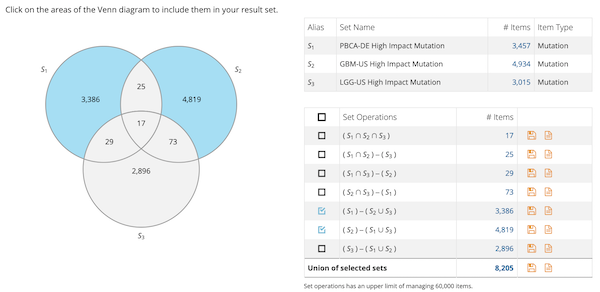

Operación de Conjuntos
Alias:ninguno
Nivel de significancia: *

Fig 3. Diagrama de Venn para realizar operación de conjuntos entre conjuntos de mutaciones.[1]
Problema
Contexto
Solución
Permitir al usuario especificar la operación de conjuntos (p.ej., unión, intersección, diferencia) a realizar entre las muestras. El resultado de la operación entre los conjuntos de datos se convierte en un nuevo conjunto de datos. Para mejorar la retroalimentación al usuario, indicar el número de ítems tanto en los conjuntos originales como del nuevo conjunto de datos resultante.
Permitir al usuario descargar (en fichero de datos) o guardar el nuevo conjunto de datos para futuros cálculos.
Estructura
Patrones relacionados
Asociación: ninguno
Agregación: ninguno
Especialización: ninguno
Ejemplos
Usos Conocidos
ICGC[1]
Bibliografía